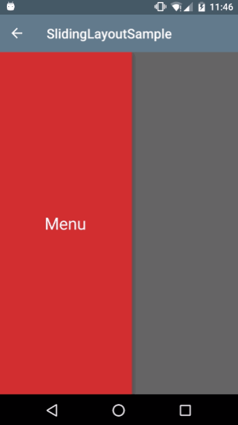

实现侧滑栏主要有两种方式：第一种是SlindingPaneLayout这个控件是一个帮助开发者实现水平的多层滑动的Layout，可以 将本来是在屏幕外的布局以滑动的形式逐渐进入屏幕，并且主视图会跟着移动(实现从右侧滑动)
第二种是DrawerLayout这个控件，可以同样将本来是在屏幕外的布局以滑动的形式逐渐进入屏幕，但是原来的主视图不会跟着移动，相当于屏幕外的布局覆盖在原来的主布局上。
一、SlindingPaneLayout控件
首先在layout文件中设计布局， SlidingPaneLayout这个控件要包裹屏幕内的控件和屏幕外的控件。
这里主要存放了两个布局文件，一个菜单布局文件ll_menu,一个住布局文件ll_main。
然后就是在代码中设置SlidingPaneLayout的一系列属性，滑动视差，颜色渐变等，滑动监听
Java代码
SlidingPaneLayout 一些主要方法
- setParallaxDistance(int parallaxBy) 设置滑动视差
- setCoveredFadeColor(int color) 导航菜单视图的滑动颜色渐变
- setSliderFadeColor(int color) 主视图的滑动颜色渐变
- setPanelSlideListener(SlidingPaneLayout.PanelSlideListener listener) 滑动监听
- openPane() 打开导航菜单
- closePane() 关闭导航菜单
注意在滑动监听中的这个方法里面，跟据slideOffset参数0~1的变化可以去改变视图大小就会做出更多种类的效果，这里我们设置滑动过程中改变主视图的大小，代码如下
public void onPanelSlide(View panel, float slideOffset) {
Log.i("mylog","slide --- "+slideOffset);
// slideOffset这个参数 是跟随滑动0-1变化的 通过这个数值变化我们可以做出一些不一样的滑动效果
ll_menu.setScaleY(slideOffset / 2 + 0.5F);
ll_menu.setScaleX(slideOffset/ 2 + 0.5F);
ll_main.setScaleY(1 - slideOffset / 5);
}
2.下面介绍第二种滑动导航菜单的效果，主视图不动，然后在边缘划出菜单。

快速实现这个效果需要利用V4包的DrawerLayout 这个布局容器，可见V4包下面有多少好东西，另外其实SlidingPaneLayout和这个DrawerLayout都是利用V4的ViewDragHelper去实现的，这是一个帮助类，这里就不多做介绍了，对它感兴趣的可以深入了解下。
看下代码实现
Layout
<?xml version="1.0" encoding="utf-8"?><LinearLayout xmlns:android="http://schemas.android.com/apk/res/android"
xmlns:tools="http://schemas.android.com/tools"
xmlns:app="http://schemas.android.com/apk/res-auto"
android:layout_width="match_parent"
android:layout_height="match_parent"
android:orientation="vertical"
>
<android.support.v7.widget.Toolbar
android:id="@+id/toolbar"
android:layout_width="match_parent"
android:layout_height="?attr/actionBarSize"
android:background="@color/colorPrimary"
app:popupTheme="@style/ThemeOverlay.AppCompat.Light"
app:theme="@style/ThemeOverlay.AppCompat.Dark.ActionBar"/>
<android.support.v4.widget.DrawerLayout
android:id="@+id/dl_left"
android:layout_width="match_parent"
android:layout_height="match_parent">
<LinearLayout
android:background="#ffffff"
android:layout_width="match_parent"
android:layout_height="match_parent">
</LinearLayout>
<!--drawer layout -->
<LinearLayout
android:layout_width="200dp"
android:layout_height="match_parent"
android:background="#D32F2F"
android:layout_gravity="start">
<TextView
android:layout_width="match_parent"
android:layout_height="match_parent"
android:text="Menu"
android:textSize="25sp"
android:gravity="center"
android:textColor="#ffffff"
/>
</LinearLayout>
</android.support.v4.widget.DrawerLayout></LinearLayout>
需要注意的是主视图的布局代码要放在侧滑菜单布局的前面，侧滑菜单布局的代码中android:layout_gravity=”start” 从左侧滑动，反之end右侧滑动。
Java代码
DrawerLayout 的一些主要方法
addDrawerListener(DrawerLayout.DrawerListener listener) 添加滑动监听
openDrawer(int gravity) 开启导航菜单 参数：GravityCompat.START GravityCompat.END 要跟XML设置相同
closeDrawer(int gravity) 关闭导航菜单
isDrawerOpen(int drawerGravity) 菜单是否开启
https://developer.android.com/reference/android/support/v4/widget/DrawerLayout.html
/**
* Created by www.lijizhou.com on 2016/7/23.
* DrawerLayout Sample
*/public class DrawerLayoutActivity extends AppCompatActivity {
private DrawerLayout drawerLayout;
private Toolbar toolbar;
@Override
protected void onCreate(@Nullable Bundle savedInstanceState) {
super.onCreate(savedInstanceState);
setContentView(R.layout.activity_drawerlayout);
setSupportActionBar(toolbar=(Toolbar) findViewById(R.id.toolbar));
drawerLayout=(DrawerLayout)findViewById(R.id.dl_left);
//ActionBarDrawerToggle是DrawerLayout.DrawerListener的实现，可以方便的将drawlayout和actionbar结合起来
ActionBarDrawerToggle actionBarDrawerToggle=new ActionBarDrawerToggle(this,drawerLayout,toolbar,R.string.open,R.string.close){
@Override
public void onDrawerOpened(View drawerView) {
super.onDrawerOpened(drawerView);
}
@Override
public void onDrawerClosed(View drawerView) {
super.onDrawerClosed(drawerView);
}
};
actionBarDrawerToggle.syncState();
drawerLayout.addDrawerListener(actionBarDrawerToggle);
}
}
DrawerLayout跟ActionBarDrawerToggle配合快速就可以快速构建出具有动画交互的滑动导航菜单效果
感受：1、eclipse有点过时了，今天想利用NavigationView控件实现策划导航效果，然而一直报一个控件填充不了的错误，上网查了一天，都是关于Android Studio的解决方法，没有关于Eclipse 一个大些的头疼。。。。决定明天换用Android Studio开发了
2、这两天源码都是写在办公室的电脑上，笔记都是直接抄袭博客，或者copy下来的。这样做不利于自己总结。
遗留问题：1、利用第一种方式，实现类似qq消息的的实现，即向右滑动出现置顶、删除、标为已读的方式。
2、 利用NavigationView和DrawerLayout实现天气应用的侧滑
3、 下一步计划学习ViewPager。